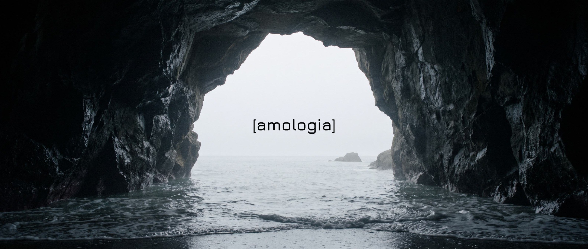
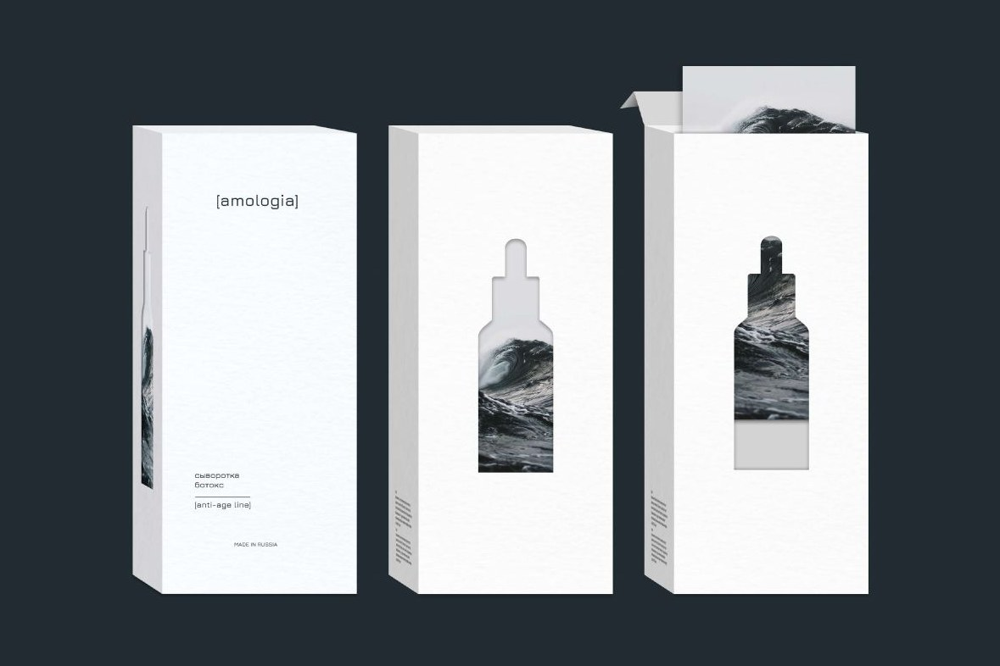
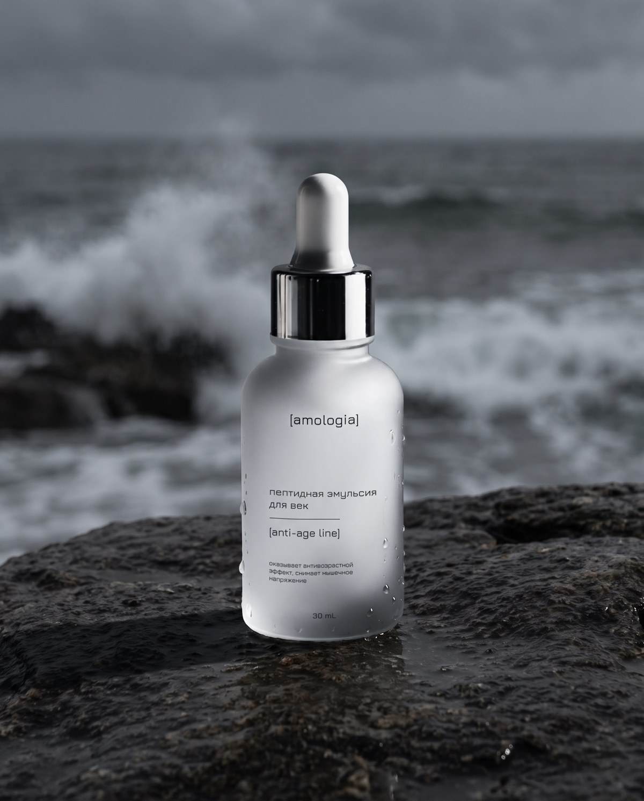
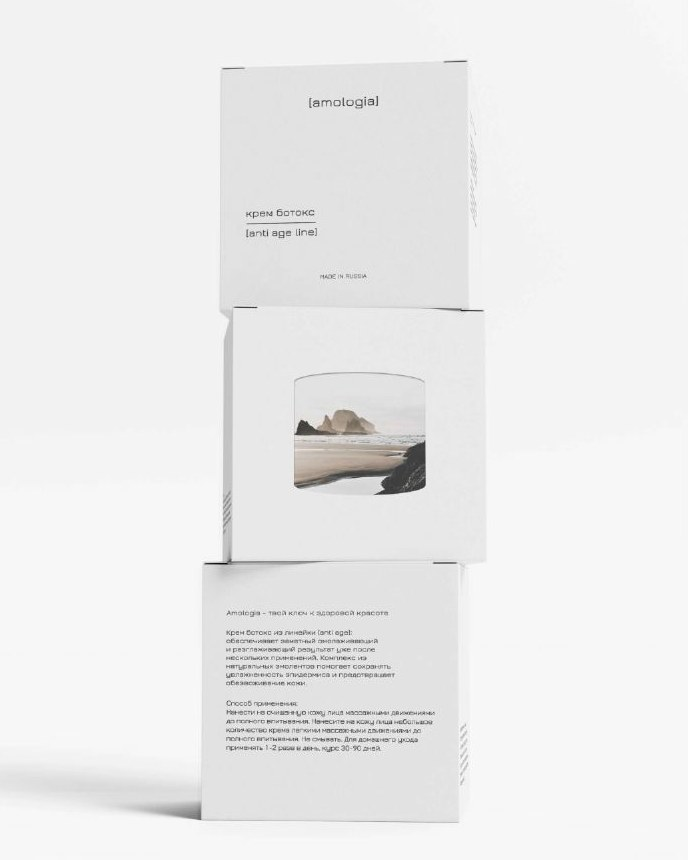
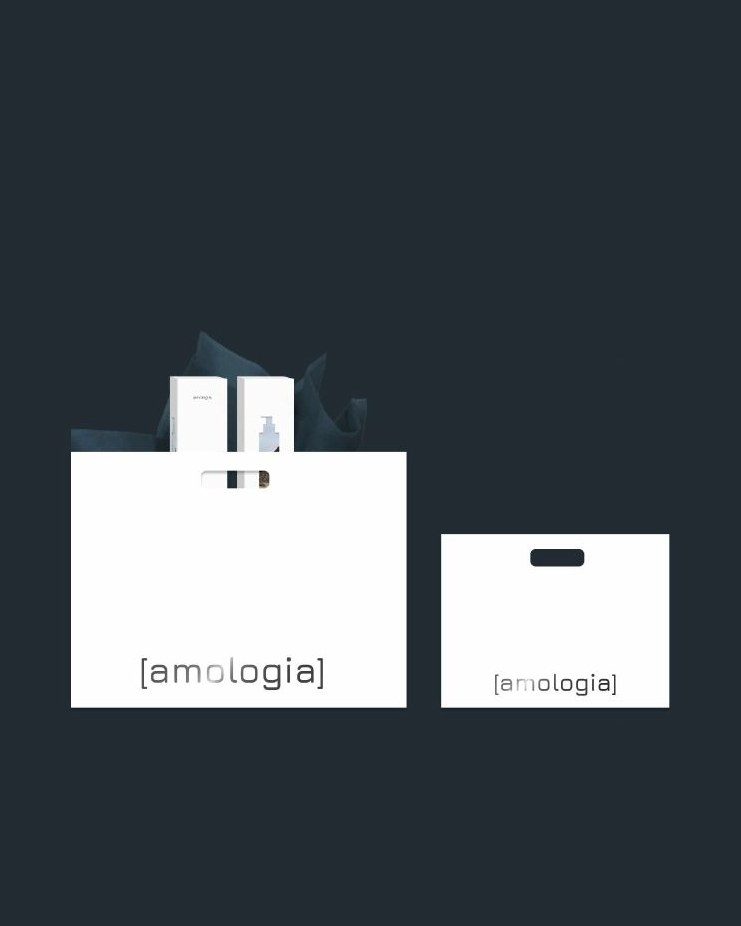
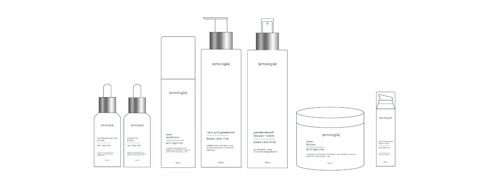
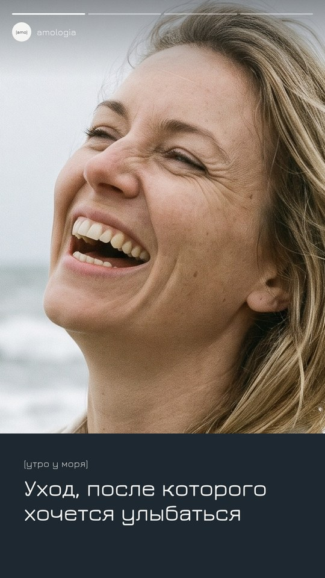
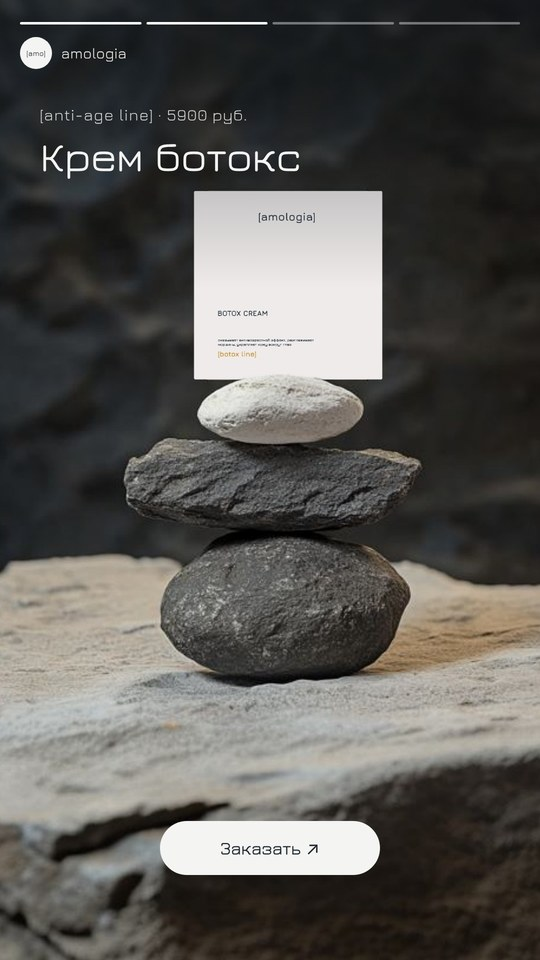
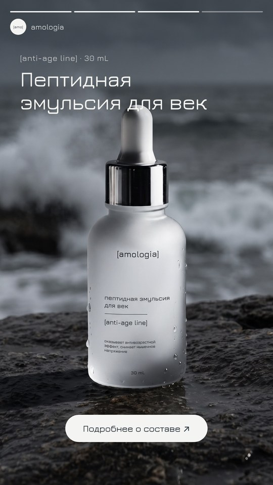
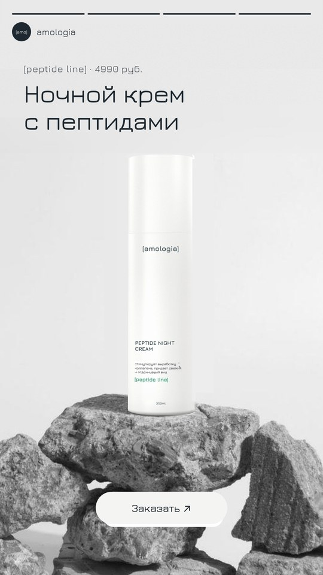

[amologia]
"I love you, science"
That is what the name means. The goal was to combine strict medicine with living nature: the typography is restrained, almost clinical, while a die-cut window on the box reveals a wave or seaside stones.
seawhitestone
- Logo in brackets, like a formula
- Two lines: anti-age and basic care
- Boxes, dielines, bags, bottles








